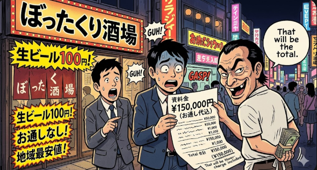
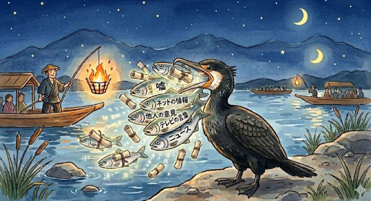
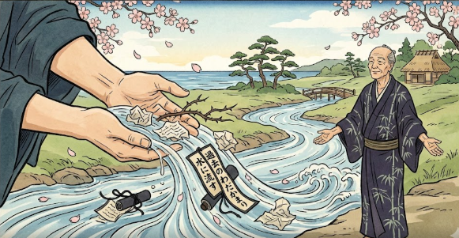

Idiom Collection
Click EXAMPLE to see a sample sentence · Mark cards to track your progress!
0 / 15 learned
 Animal
Animal
猫の手も借りたい
ねこのてもかりたい
"I'd even borrow a cat's paw"
Meaning
So busy you'd accept help from anyone — even a cat!
年末は猫の手も借りたいほど忙しい。
At year-end, we're so busy we'd take help from anyone.
 Food
Food
サバを読む
さばをよむ
"To read the mackerel"
Meaning
To fudge the numbers to one's advantage (often used for age or weight).
彼女は年齢を2歳サバを読んでいる。
She fudged her age by two years.

Workぼったくり
ぼったくり
"Rip-off"
Meaning
Being charged an outrageous or unfair price for goods or services.
あのバーは完全にぼったくりだ。
That bar is a complete rip-off.
 Body
Body
頭が固い
あたまがかたい
"Hard head"
Meaning
To be stubborn, inflexible, or narrow-minded.
うちの上司は頭が固くて、新しいアイデアを受け入れない。
My boss is so stubborn that he won't accept new ideas.

Animal鵜呑みにする
うのみにする
"To swallow whole like a cormorant"
Meaning
To swallow a story whole; to accept information at face value without questioning it.
ネットの情報をすべて鵜呑みにしてはいけない。
You shouldn't swallow everything you read on the internet whole.
 Food
Food
やきもちを焼く
やきもちをやく
"To bake a roasted mochi"
Meaning
To be jealous (usually in a romantic or affectionate context).
彼が他の女の子と話しているのを見て、やきもちを焼いた。
I got jealous seeing him talk to another girl.
 Body
Body
耳が痛い
みみがいたい
"Ears hurt"
Meaning
Painful to hear because it is true (often a valid criticism or harsh truth).
親の忠告は耳が痛いが、その通りだ。
My parents' advice hurts to hear, but they are right.

Nature水に流す
みずにながす
"Let flow in the water"
Meaning
To forgive and forget; let bygones be bygones (water under the bridge).
昨日の喧嘩は水に流して、仲直りしよう。
Let's let yesterday's fight be water under the bridge and make up.
 Food
Food
朝飯前
あさめしまえ
"Before breakfast"
Meaning
A piece of cake; very easy to do (something you can easily do before eating breakfast).
このくらいの仕事なら、朝飯前だよ。
A job like this is a piece of cake for me.
 Body
Body
骨を折る
ほねをおる
"To break a bone"
Meaning
To make a great effort; to take pains or go out of one's way to do something.
イベントの準備にずいぶん骨を折った。
We took great pains preparing for the event.
 Work
Work
油を売る
あぶらをうる
"To sell oil"
Meaning
To slack off, idle away time, or stop to chat while working or doing errands.
仕事中に油を売ってはいけません。
Don't slack off and chat during work hours.
 Nature
Nature
根回し
ねまわし
"To dig around the roots"
Meaning
Laying the groundwork or getting consensus behind the scenes before making a formal decision.
会議の前に十分な根回しが必要だ。
We need to lay enough groundwork before the meeting.
 Work
Work
元を取る
もとをとる
"To take back the origin"
Meaning
To get one's money's worth; to recoup one's investment or expenses.
食べ放題で元を取るのは難しい。
It's hard to get your money's worth at an all-you-can-eat buffet.
 Body
Body
顔が広い
かおがひろい
"Wide face"
Meaning
To be well-connected; to have a large circle of acquaintances.
彼は顔が広いので、いい仕事を紹介してくれた。
Because he is well-connected, he introduced me to a good job.
 Animal
Animal
猫をかぶる
ねこをかぶる
"To wear a cat"
Meaning
To play innocent; to feign friendliness or hide one's true nature.
彼女は先生の前では猫をかぶっている。
She plays innocent in front of the teacher.
SUPPORT OHAYO CENTER
If you find these materials helpful, please consider supporting us!